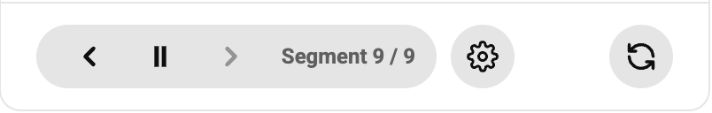
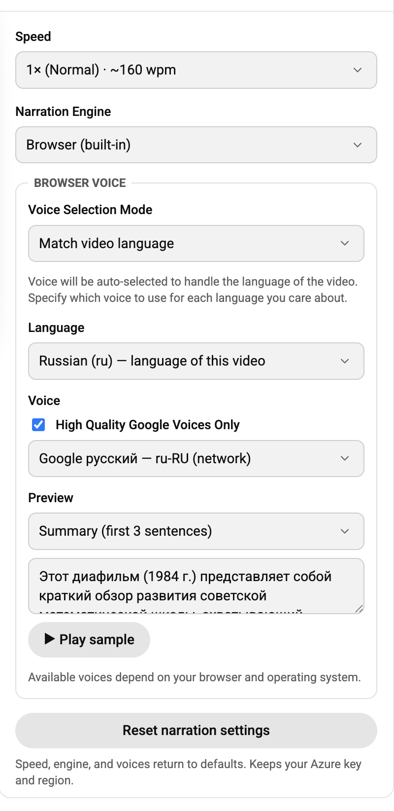

Guide
Listening to Summaries
Every summary has a Listen button. Click it and the summary is read aloud — no sign-up, no key, nothing to configure. It just works, using a voice already in your browser.
The Player
While a summary plays you get simple controls: previous, play/pause, and next. Summaries are read section by section — a heading or a paragraph at a time, with a short breath between sections, the way a person would read them. The label shows where you are, like "Segment 3 / 7".

- Next / Previous jump between sections, so you can skip ahead or replay the point you just missed.
- Previous works like a music app: if a section just started, it goes back one; otherwise it restarts the current one.
- Pause remembers your place; play resumes from the start of that section.
Settings
Click the gear icon next to Listen to open settings. Everything saves automatically.

- Speed — one playback speed for everything, from relaxed to very fast.
- Narration Engine — Browser (built-in) is the free voice that works out of the box. Azure API unlocks premium, natural-sounding voices and needs your own key (more below).
- Voice Selection Mode — "Match video language" narrates each video in its own language, and remembers which voice you prefer for each language. "One voice for all videos" always uses a single voice you pick.
- Preview — hear a voice before committing: it can read the first sentences of the actual summary, or a sample sentence in the language you're browsing.
- Reset narration settings — puts everything back to defaults (your Azure key, if any, is kept).
Languages
Narration follows the video: a French video is read in French, a Russian one in Russian. If your browser has no voice for a video's language, 10xTube says so instead of reading it in the wrong language — installing a voice or switching to Azure fixes that.
Why Voices Sound Different in Chrome and Safari
The free built-in narration uses whatever voices your browser offers, and browsers differ a lot:
- Chrome ships with a set of Google voices that sound quite good — most people find them perfectly pleasant for summaries.
- Safari (on Mac and iPhone) can only use some of the voices built into the system — and in our experience, extra voices you download in System Settings usually do not show up in Safari. The ones that remain tend to sound noticeably more robotic.
That's why Safari and iPhone users get the most out of the optional Azure voices below — Chrome users may be happy without them.
Nicer Voices with Azure (Optional)
If you want narration that sounds like a professional audiobook reader — in nearly any language — 10xTube can use Microsoft's Azure Speech voices with a key you create yourself. Our step-by-step guide walks you through it in about ten minutes.
Please know: 10xTube is not affiliated with Microsoft or Azure, and we don't earn anything if you sign up. We suggest it only because, at the time of this extension's release, Azure offered a generous free monthly text-to-speech allowance — Microsoft can change its terms and pricing at any time, and any charges on your Azure account are between you and Microsoft. Always check Microsoft's current pricing before relying on it.